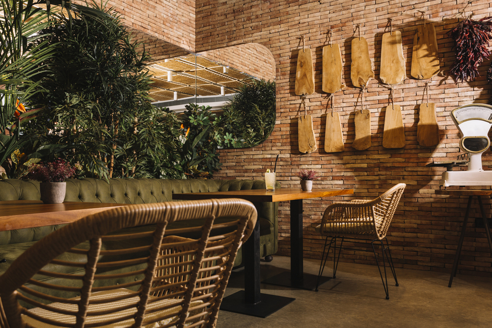

Você foi convocado para encontrar o diario da familia real
Você se depara com um corredor imenso e uma baita porta.
Ao chegar na cafeteria, a garçonete te olha feia
A garçonete diz que esta bem e fala para você fazer o pedido

Você se decepsiona pois a percebe que seguiu as pistas erradas quando ve a princesa.
Você vai a cafeteria
Você percebe o comportamento estranho da garçonete.
A garçonete fica incomodada com você
Você desconfia muito mais daquela mulher
A garçonte fica incomodada e acaba confessando tudo
A garçonete te leva para dentro da cafeteria

Dentro da caverna você encontra o diario cheio de recitas reais e descobre que a cafeteria foi aberta com todas as recitas da familia real.
O mistério foi desvendado!